Class BoundingBox
- Namespace
- OpenMEPSandbox.Geometry.Abstract
- Assembly
- OpenMEPSandbox.dll
public class BoundingBox- Inheritance
-
BoundingBox
- Inherited Members
Methods
Area(BoundingBox)
Get area of bounding box
[NodeCategory("Query")]
public static double Area(BoundingBox boundingBox)Parameters
boundingBoxBoundingBoxthe boundingBox
Returns
- double
the area value of boundingBox
Examples
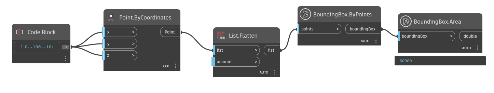
BoundingBox.Area.dynByBoundingBoxs(List<BoundingBox>)
Create a bounding box from a list of bounding boxes
[NodeCategory("Create")]
public static BoundingBox ByBoundingBoxs(List<BoundingBox> boundingBoxes)Parameters
boundingBoxesList<BoundingBox>the list of boundingBox
Returns
- BoundingBox
new boundingBox crete by collection boundingBox
Examples
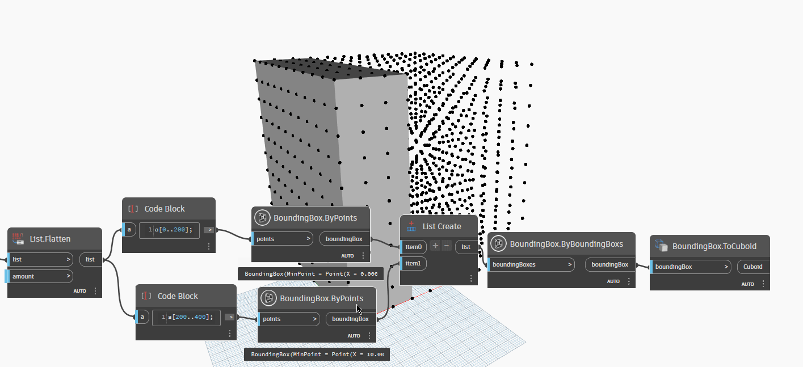
BoundingBox.ByBoundingBoxs.dynByPoints(List<Point>)
Create a bounding box from a list of points
[NodeCategory("Create")]
public static BoundingBox ByPoints(List<Point> points)Parameters
pointsList<Point>the list point to create new bounding box
Returns
- BoundingBox
new boundingBox from list point
Examples
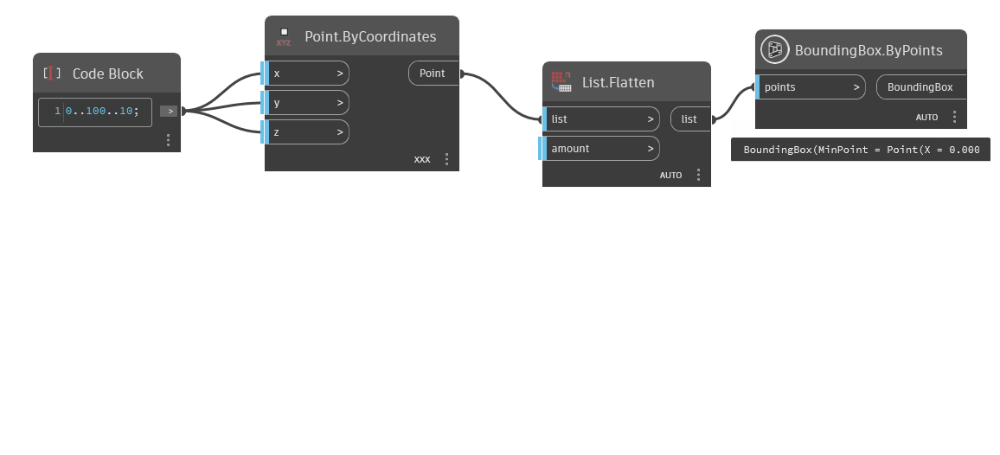
BoundingBox.ByPoints.dynCenter(BoundingBox)
Get center point of bounding box
[NodeCategory("Query")]
public static Point Center(BoundingBox boundingBox)Parameters
boundingBoxBoundingBoxthe boundingBox need get point center
Returns
- Point
center point of boundingBox
Examples
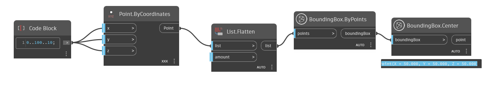
BoundingBox.Center.dynCorners(BoundingBox)
Get 8 points corners of bounding box
[NodeCategory("Query")]
public static List<Point> Corners(BoundingBox boundingBox)Parameters
boundingBoxBoundingBox
Returns
- List<Point>
list point corner of the boundingBox
Examples
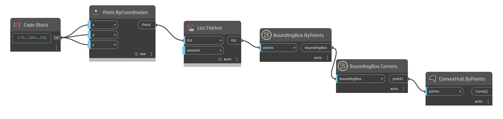
BoundingBox.Corners.dynDivide(BoundingBox, double)
Divide the bounding box by value
public static List<BoundingBox> Divide(BoundingBox boundingBox, double value)Parameters
boundingBoxBoundingBoxthe boundingBox
valuedoublehow many part boundingBox will divide for each edge
Returns
- List<BoundingBox>
the collection boundingBoxs divide
Examples
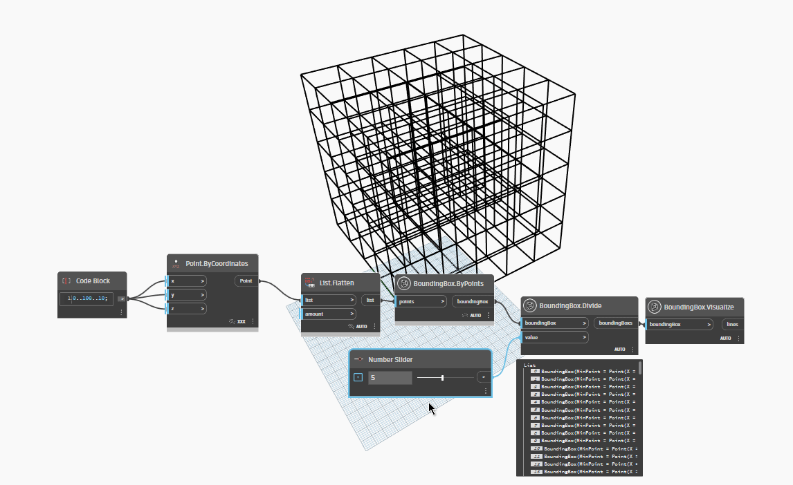
BoundingBox.Divide.dynDivideByWidthAndLength(BoundingBox, double, double)
Divides a bounding box into smaller bounding boxes by width and length.
public static List<BoundingBox> DivideByWidthAndLength(BoundingBox boundingBox, double width, double length)Parameters
boundingBoxBoundingBoxThe original bounding box to be divided.
widthdoubleThe number of divisions along the width.
lengthdoubleThe number of divisions along the length.
Returns
- List<BoundingBox>
A list of smaller bounding boxes resulting from the division.
Examples
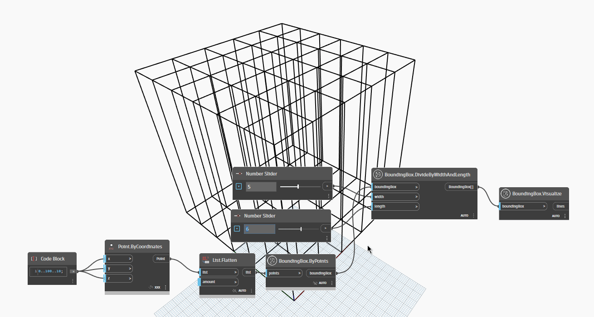
BoundingBox.DivideByWidthAndLength.dynDivideByWidthLengthHeight(BoundingBox, double, double, double)
Divides a given bounding box into smaller bounding boxes based on specified width, length, and height divisions.
public static List<BoundingBox> DivideByWidthLengthHeight(BoundingBox boundingBox, double width, double length, double height)Parameters
boundingBoxBoundingBoxThe original bounding box to be divided.
widthdoubleThe number of divisions along the width.
lengthdoubleThe number of divisions along the length.
heightdoubleThe number of divisions along the height.
Returns
- List<BoundingBox>
A list of smaller bounding boxes resulting from the division.
Examples
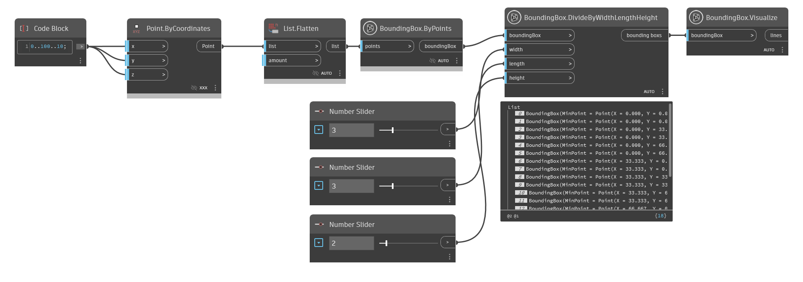
BoundingBox.DivideByWidthLengthHeight.dynIsSimilar(BoundingBox, BoundingBox, double)
Determines whether two bounding boxes are similar within a specified tolerance.
[NodeCategory("Query")]
public static bool IsSimilar(BoundingBox boundingBox1, BoundingBox boundingBox2, double tolerance = 0.001)Parameters
boundingBox1BoundingBoxThe first bounding box to compare.
boundingBox2BoundingBoxThe second bounding box to compare.
tolerancedoubleThe acceptable tolerance for dimension differences (default is 0.001).
Returns
- bool
True if the bounding boxes are similar within the tolerance; otherwise, false.
Examples
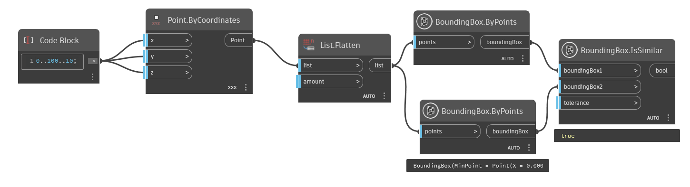
BoundingBox.IsSimilar.dynScale(BoundingBox, double)
Scale the bounding box by value
public static BoundingBox Scale(BoundingBox boundingBox, double value)Parameters
boundingBoxBoundingBoxthe boundingBox need scale
valuedoublescale value
Returns
- BoundingBox
boundingBox
Examples
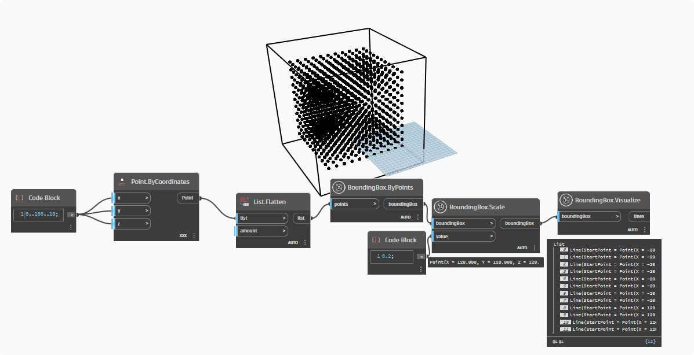
BoundingBox.Scale.dynVisualize(BoundingBox)
Visualize the bounding box by corner points
public static List<Line> Visualize(BoundingBox boundingBox)Parameters
boundingBoxBoundingBoxthe boundingBox
Returns
- List<Line>
the list line corner of the boundingBox
Examples
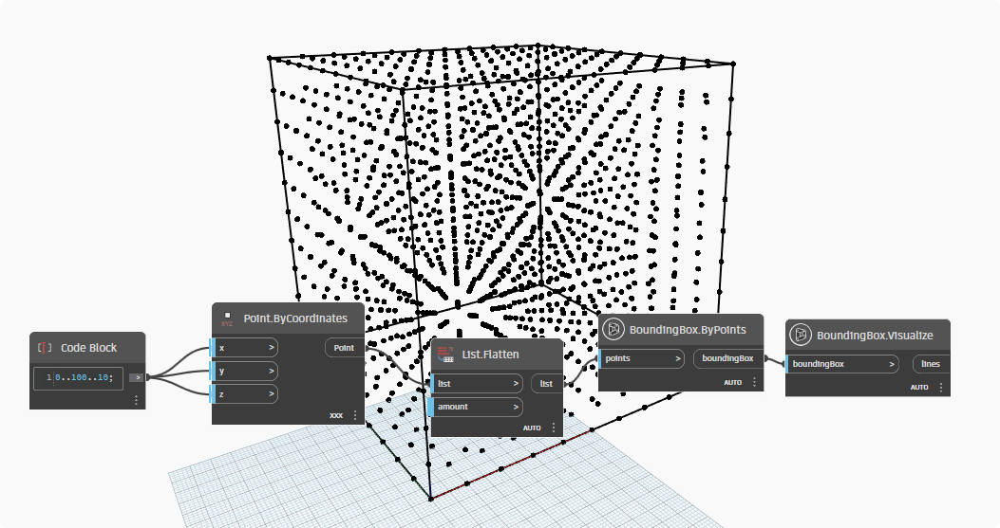
BoundingBox.Visualize.dynVolume(BoundingBox)
Returns the volume of the bounding box.
[NodeCategory("Query")]
public static double Volume(BoundingBox boundingBox)Parameters
boundingBoxBoundingBoxthe boundingBox
Returns
- double
volume of the boundingBox
Examples
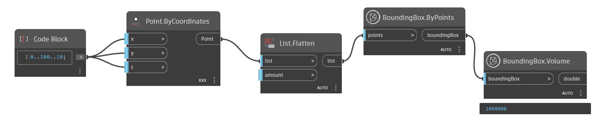
BoundingBox.Volume.dyn